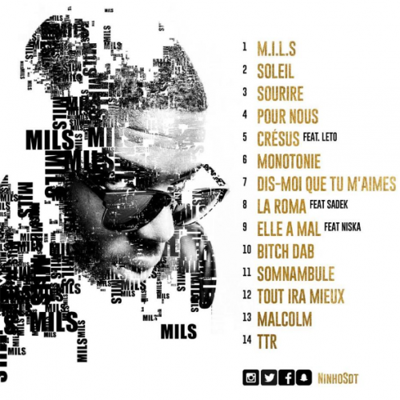

MILS
Sortie : 2016
Avec MILS, Ninho pose les bases de son univers musical. Ce projet montre déjà sa maîtrise du rap et sa capacité à créer des morceaux marquants.

Une série d'albums qui a marqué la carrière de Ninho.
La série M.I.L.S occupe une place centrale dans la discographie de Ninho. Chaque projet représente une nouvelle étape dans son évolution artistique et montre sa capacité à rester constant dans la qualité de ses morceaux.

Sortie : 2016
Avec MILS, Ninho pose les bases de son univers musical. Ce projet montre déjà sa maîtrise du rap et sa capacité à créer des morceaux marquants.
Sortie : 2018
MILS 2.0 confirme la montée en puissance de Ninho dans le rap français avec plusieurs morceaux devenus très populaires.
Sortie : 2020
Ce troisième projet marque un très grand succès commercial et confirme la place de Ninho parmi les artistes majeurs du rap français.
Sortie : 2024
MILS 4 poursuit cette série emblématique et montre la régularité de Ninho dans sa carrière.